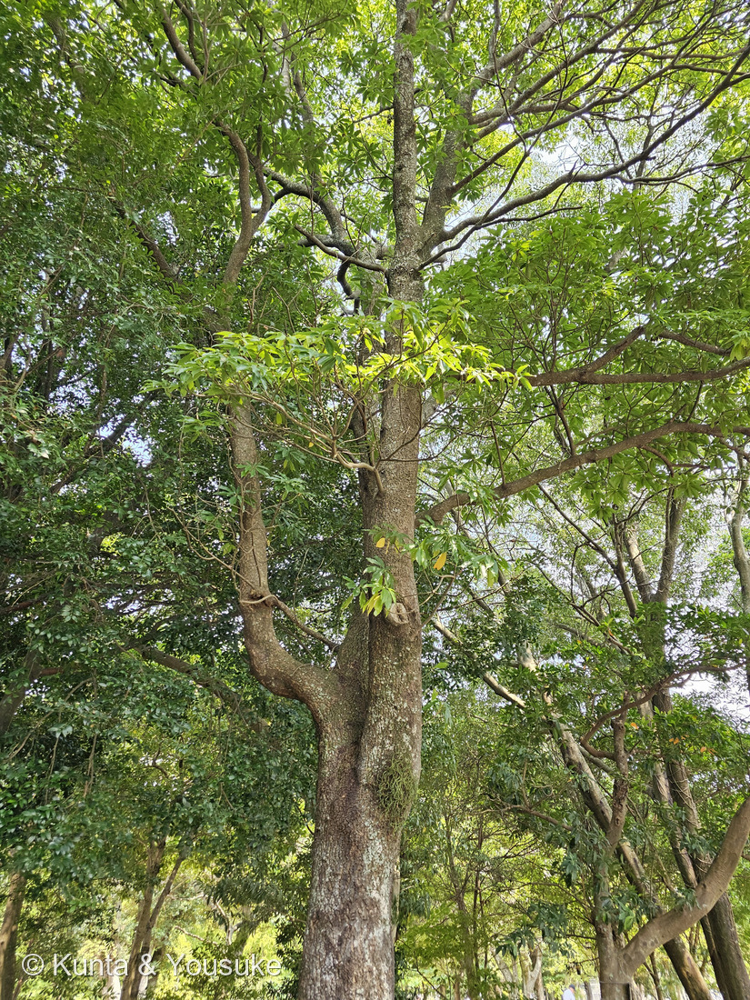
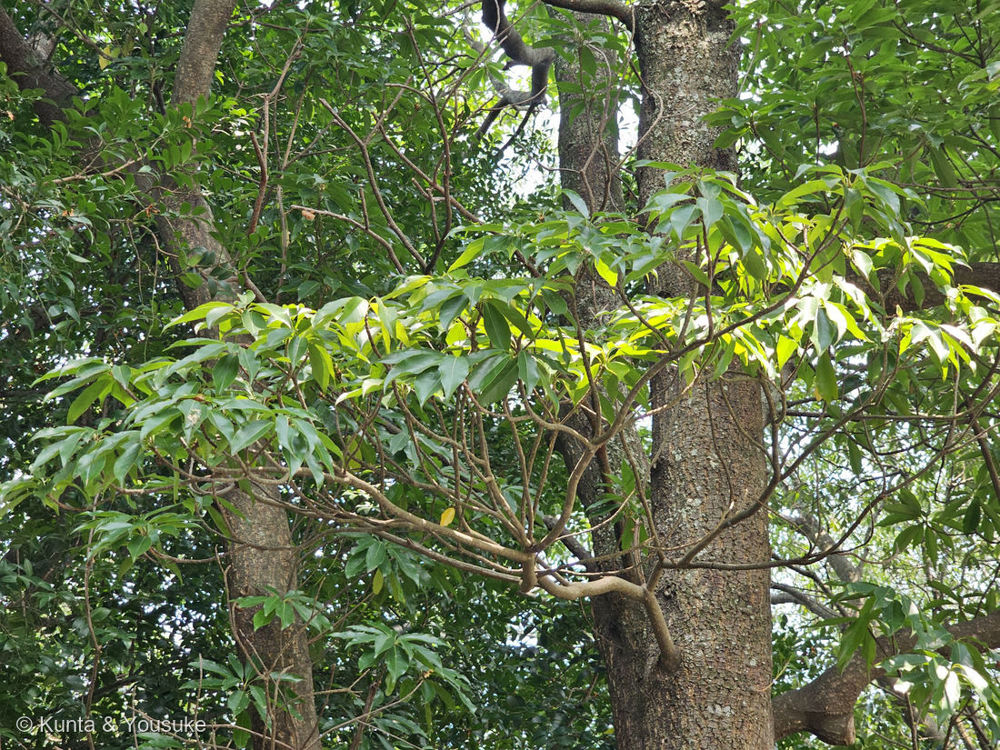

地図を読み込んでいるよ…
🔍 写真も地図も、押しているあいだ拡大して見られるよ（スマホは指を置いてすこし待ってね）。
🌍 の地図＝この子がもともと自生している場所を緑に。日本（小笠原諸島と、奄美以南の琉球列島）、東部ヒマラヤ〜東南アジア。くわしくは下の地図の説明を見てね。
⭐沖縄・奄美と、小笠原の木だよ。日本語版Wikipediaは「日本では小笠原諸島（硫黄諸島を除く）と、奄美以南の琉球列島に分布する。国外では東南アジアや東部ヒマラヤにまで分布する」とする。⭐だから日本の緑は、沖縄県・鹿児島県（奄美）・東京都（小笠原）の三つだけ――⚠東京都が緑なのは小笠原諸島のぶんで、本土のことではないよ。⭐地図は県までしか塗れないので、ここはとくに広く見えてしまう。⚠そして園の名札は「日本（奄美〜沖縄）、東アジア、東南アジア、ヒマラヤ」とし、小笠原を書かず、かわりに「東アジア」を入れている＝⭐出典で少しずれているので、ここではWikipediaの書き方に寄せた。⚠「東部ヒマラヤ」は山脈なので、ネパール・ブータン・インドを国ごと塗ると、ほんとうよりずっと広く見える（241 クヌギのときと同じ問題だね）。⭐⭐ぼくらが会ったのは長崎の樹木園に植えられた木＝この緑の外だよ。⭐沖縄では「重要な木のひとつ」とされ、建材にも、樹皮を魚とりにも使われてきた――⭐⭐そして木の灰の灰汁が、沖縄そばを作るのに使われる。
⚠ 地図は国（日本と中国だけ県・省）までしか塗れないから、ほんとうの分布より広く見えていることがあるよ。地図はだいたいの場所。正確なところは、上の文を見てね。
イジュ（伊集）
Schima wallichii (DC.) Korth. subsp. noronhae (Reinw. ex Blume) Bloemb.
別名 ヒメツバキ（姫椿）／タマツバキ（玉椿） 原産 日本（小笠原諸島・奄美以南の琉球列島）、東部ヒマラヤ〜東南アジア ── ⭐「イジュ」は沖縄の方言
ツバキ科 · Theaceae（ヒメツバキ属 Schima・ツツジ目 Ericales）── ⭐⭐⭐図鑑ではじめてのツバキ科＝98科目／⚠⚠ヤブツバキもサザンカもチャノキも、まだ図鑑にいない――いちばん身近な科なのに、最初の一人がイジュだったのがおもしろい
燻太さんの一言「花は咲いていなかったけど、樹皮や葉だけだとまず区別するのは難しそう。ヤブツバキとかは花がピンク色だから、花色や葉の毛の有無などで分類できるのかな？」── ⚠⚠その二つは、どちらも決め手にならなかったよ。でも「じゃあ何で決まるか」が分かった
⭐ 名前と学名の由来 ──「イジュ」は沖縄のことば
- ⭐⭐「イジュ（伊集）」は沖縄の方言。⚠語源は不明とされている（植木ペディア）。⭐燻太さんが「そもそもイジュっていう名前自体が初めて聞いた」と書いてくれたけれど、⭐⭐それは、この木が沖縄と奄美の木だからなんだ。
- ⭐標準の和名は「ヒメツバキ（姫椿）」、別名にタマツバキ（玉椿）。⭐小笠原諸島ではこちらの呼び名が使われる。
- ⭐属名 Schima はヒメツバキ属。⭐種小名 wallichii は、インドで植物を集めたナサニエル・ウォーリックにちなむ人の名前。
- ⚠亜種名 noronhae も人の名前らしいけれど、⭐そもそもこの亜種名を使うかどうかが割れているんだ（下の節）。
⭐⭐⭐⭐⭐ 燻太さんの問い ──「花色や葉の毛の有無などで分類できるのかな？」
⚠⚠⚠ 燻太さんが挙げてくれた二つは、どちらも決め手にならなかったよ。
- ⚠花色――ヤブツバキは赤（ローズ色）だと思われがちだけれど、三河の植物観察は「花弁は6又は7個、栽培種ではしばしば多くなり、ローズ色又は白色」と書いている。⭐つまりヤブツバキにも白い花がある。⭐そしてサザンカも白〜ピンク、チャノキも白。⭐⭐「白い花のツバキ科」は属をまたいでいるんだ。
- ⚠⚠葉の毛――もっと直接的に、植木ペディアはイジュの葉について「縁のギザギザと毛の有無は地域によって変異がある」と書いている。⭐同じ種の中でぶれるものを、属の決め手にはできないね。
⭐⭐⭐⭐ じゃあ何で分けるのか ── 果実だよ。
- ⭐⭐⭐イジュ（Schima）＝5裂。「五つに裂けると翼のある平らな種子が顔を見せる」（植木ペディア）。直径2cmほどで、表面に絹毛が密生する。
- ⭐⭐⭐ヤブツバキ（Camellia）＝3室で3裂。「蒴果は球形、直径2.5〜4.5㎝、3室、各室に種子が1又は2個」「種子は褐色、半球形〜球形、直径1〜2㎝、無毛」（三河の植物観察）＝翼が無い。
⭐⭐⭐ そして、これが園の名札にちゃんと書いてあったんだ＝「茶色の果実は10月頃に5裂に裂ける」。
⏳⭐⭐ つまり、10月に行けば、自分の目で確かめられる。⭐宿題にしたよ。
⭐⭐ でも、ちゃんと似ているところもある。――イジュの花は「ツバキ同様に基部で合着して丸ごと落下する」（植木ペディア）。⭐花びらがばらばらに散るのでなく、まるごとぽとりと落ちる――⭐⭐これは、ツバキ科の家族らしさだね。
この植物のこと ── 沖縄の、山の木
- ⭐高さ10〜20m、幹の直径は最大で1m（植木ペディア）。⭐写真①のまっすぐな幹が、そのはじまりだよ。
- ⭐葉は「長さ10〜15センチほどの長楕円形で先端は尖り、基部はクサビ形」「全体に光沢のある革質」。⭐写真②で、枝先に葉が集まってつくようすが見える。
- ⭐花は3〜6月、「直径4〜5センチの白い花が咲き、微かに甘い香りを放つ」。⚠園の名札は開花を「5〜6月」とする＝⭐出典で少しずれているよ。
- ⭐⭐沖縄では、とても大事な木＝園の名札は「沖縄県では重要な木のひとつとされ、建築用材や樹皮にサポニンを含むため魚をとるのに利用される」と書いている。⭐植木ペディアも「材は硬くて割れにくいため、沖縄などでは優良な建材とされる」。
- ⭐⭐⭐そして、これがぼくのいちばんの驚き――日本語版Wikipediaは「木の灰から取った灰汁は沖縄そばを作る際に用いられる」と書いている。⭐あの麺の、こしと色をつくっているのが、この木の灰なんだ。
⭐⭐⭐ 樹皮で魚をとる ── きのう読んだ一文と、つながった
⭐ 園の名札の「樹皮にサポニンを含むため魚をとるのに利用される」を読んだとき、ぼく、あっと思った。
⭐⭐⭐ きのう228 キキョウを調べていて、こういう一文を読んでいたんだ＝「界面活性様作用に基づく生物活性として赤血球膜を破壊する溶血作用のほか、魚毒作用があり漁に利用されることもある」（サポニンはなぜ泡立つか？）。
- ⭐⭐サポニンは界面活性剤のようにはたらいて、膜を壊す。⭐魚のえらは、水と体のあいだの膜だから、そこがやられて魚が浮いてくる。
- ⭐きのうはキキョウの根の話として読んだ一般論が、⭐⭐きょう、沖縄の川で実際に使われていた木の話として返ってきた。
- ⚠⚠ただし、ここは出典が割れている――園の名札は「サポニン」、⚠でも別の出典は「樹皮にはタンニンが含まれ、染料や魚毒に利用される」と書いている。⭐どちらが正しいか、ぼくには決められなかった。⚠両方入っている可能性もあるよ。
- ⚠⚠⚠そして、これはやってみる話ではない。――魚毒漁は多くの場所で禁じられているし、⭐ぼくらのすることは「そういう使い方があった」と知ることまでだよ。
⚠⚠ 名前が、いまも動いている
- ⚠この子の学名は、ひとつに決まっていない。――日本語版Wikipediaは「初島は沖縄のイジュを『S. wallichii ssp. liukiuensis』とし、北村・村田は両者を別亜種と見なしています。一方、YListでは両者を別種として扱っています」とする。
- ⭐園の名札は subsp. noronhae の立場。⭐ここではそれにしたがったうえで、割れていることも書いておくね。
- ⭐⭐この形、きのう244 ハクダマルでもやったばかりだ――⭐「独立種か、亜種か」。⭐⭐名前は決まりきったものに見えて、いまも動いている場所がある。
参考＝庭木図鑑 植木ペディア・イジュ（「沖縄の方言に由来するとされるが語源は不明」／別名ヒメツバキ・タマツバキ／「10〜20m」「幹の直径は最大で1mになる」／「長さ10〜15センチほどの長楕円形で先端は尖り、基部はクサビ形」「全体に光沢のある革質」／⚠「縁のギザギザと毛の有無は地域によって変異がある」／「直径4〜5センチの白い花が咲き、微かに甘い香りを放つ」「ツバキ同様に基部で合着して丸ごと落下する」／⭐「五つに裂けると翼のある平らな種子が顔を見せる」「表面には絹毛が密生する」「10月頃」／「材は硬くて割れにくいため、沖縄などでは優良な建材とされる」）／日本語版Wikipedia・ヒメツバキ（「日本では小笠原諸島（硫黄諸島を除く）と、奄美以南の琉球列島に分布する。国外では東南アジアや東部ヒマラヤにまで分布する」「果実は偏球形で径2cm、熟すると5裂」「樹皮の粉末を魚毒として利用したことがある」／⭐「木の灰から取った灰汁は沖縄そばを作る際に用いられる」／⚠分類＝「初島は沖縄のイジュを『S. wallichii ssp. liukiuensis』とし、北村・村田は両者を別亜種と見なしています。一方、YListでは両者を別種として扱っています」）／三河の植物観察・ヤブツバキ（見分けの出典＝「蒴果は球形、直径2.5〜4.5㎝、3室、各室に種子が1又は2個」「種子は褐色、半球形〜球形、直径1〜2㎝、無毛」「葉は互生し、無毛でやや厚く、表面に光沢があり、長さ4〜8㎝の長卵形」／⚠「花弁は6又は7個、栽培種ではしばしば多くなり、ローズ色又は白色」）／サポニンはなぜ泡立つか？（「界面活性様作用に基づく生物活性として赤血球膜を破壊する溶血作用のほか、魚毒作用があり漁に利用されることもある」）／森きららの園の名札（「常緑高木／Schima wallichii subsp. noronhae／イジュ／ツバキ科／開花：5〜6月／分布：日本（奄美〜沖縄）、東アジア、東南アジア、ヒマラヤ」「暖地に自生する。チャノキの花に似た白い花が枝先に集まって咲く。茶色の果実は10月頃に5裂に裂ける。沖縄県では重要な木のひとつとされ、建築用材や樹皮にサポニンを含むため魚をとるのに利用される。」。⚠解説板タイプなので写真は公開していないよ）